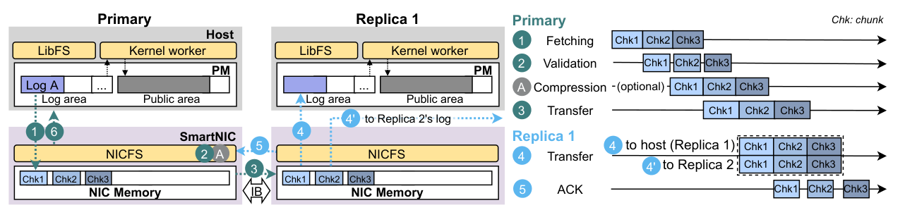
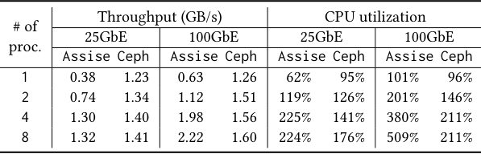
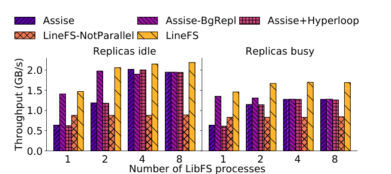
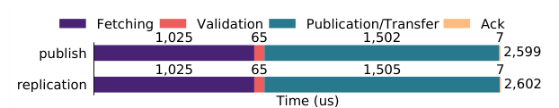
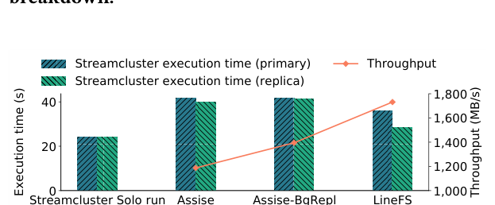
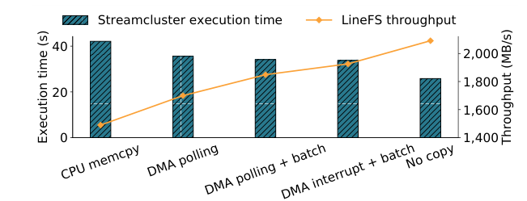
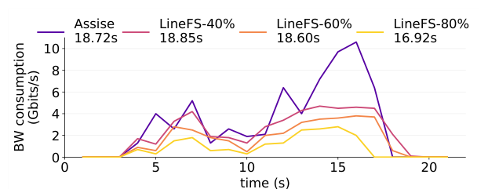
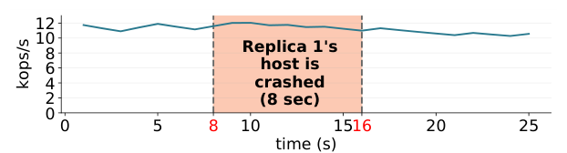

LineFS: Efficient SmartNIC Offload of a Distributed File System with Pipeline Parallelism
This page was written by an AI model to give a high-level overview of the paper. Please check the paper for detail: ACM Digital Library.
Distributed file systems (DFSes) for persistent memory (PM) increasingly keep storage client-local: Assise and Orion put file data and metadata on the same machine that runs the application, avoiding a network hop to a storage server. This makes PM access fast, but it also means the DFS's own management work (log replay, indexing, replication, consistency coordination) now runs on the same host cores as the application. The paper measures this directly: on a 24 GB sequential-write benchmark, the client-local Assise uses up to 60% and, at 100 GbE, 2.4 times more host CPU cycles than the client-server Ceph, rising to 5.09 cores for 8 clients versus Ceph's 2.11. That CPU and memory contention makes application performance unpredictable, inflates DFS tail latency, and forces operators to over-provision CPU for peak DFS load.
SmartNIC offload is an obvious fix, and is already used for disaggregated storage protocols like NVMe over fabrics, but no prior system offloads a full DFS. The reason is that SmartNICs are weak: they sit across PCIe from host memory (microseconds of latency instead of the roughly 100 ns of a DDR-attached DRAM or PM access), and their processors are built to a tight power budget (BlueField's ARM cores run at 800 MHz with small caches). The authors tried a naive port of Assise's per-node management component to a SmartNIC and measured throughput drop by more than 30 times, confirming that simply moving code across PCIe does not work.
LineFS's key idea is to restructure the DFS data path so that only the operations the SmartNIC can actually do efficiently are offloaded, and to hide the SmartNIC's latency by running everything else as a parallel pipeline. A persist-and-publish split keeps the latency-critical part, durably logging an update, on fast host cores in client-private PM logs; a SmartNIC-resident file system component, NICFS, then asynchronously publishes those log entries into shared PM and replicates them to other nodes. Because publication and replication would otherwise serialize PCIe fetches, validation, and network transfers, LineFS breaks each into independent pipeline stages (fetch, validate, publish/transfer, acknowledge) that process fixed-size "LineFS chunks" and run concurrently, both within one client's log (intra-client parallelism) and across multiple clients (inter-client parallelism), while preserving per-client log order for linearizability and prefix crash consistency.
LineFS is implemented by offloading Assise's per-node management (SharedFS) onto a Mellanox BlueField SmartNIC, in addition to compression and lease arbitration, and by using the SmartNIC's independent execution environment to keep serving as a replica even if the host operating system crashes. Measured against Assise variants on a 3-node PM/RDMA cluster, LineFS's write throughput exceeds all Assise configurations by at least 41% and saturates the network; it improves LevelDB latency by up to 80% and Filebench throughput by up to 79%; it reduces replication network bandwidth for a sort benchmark by up to 72% via on-the-fly compression; and it degrades a co-running CPU-intensive job far less than Assise does, while sustaining Varmail throughput through a simulated 8-second host failure.

Key takeaways
- Client-local PM DFSes (Assise, Orion) trade network latency for host CPU and memory contention; Assise uses up to 2.4 times Ceph's CPU cycles on the same write benchmark.
- Naively offloading a DFS component to a SmartNIC is much slower than keeping it on the host (the paper measured a greater than 30x throughput drop), because SmartNICs are wimpy and separated from host PM by high-latency PCIe.
- Persist-and-publish: applications durably log updates on fast host cores; a SmartNIC-side NICFS asynchronously publishes and replicates those logs, keeping the critical path short.
- Pipeline parallelism: NICFS decomposes publication and replication into fetch, validate, publish/transfer, and acknowledge stages operating on chunks, overlapping PCIe and network latency across chunks and clients instead of serializing it.
- LineFS improves write throughput over Assise variants by at least 41%, LevelDB latency by up to 80%, Filebench throughput by up to 79%, and sustains DFS availability through host OS failure by running NICFS in isolation.
From a client-local DFS to a SmartNIC-offloaded pipeline
Where client-local DFS CPU time goes, why naive SmartNIC offload fails, and how LibFS and NICFS split the data path.
1 · Where client-local DFS CPU time goes
The paper identifies four file system tasks that consume client CPU and memory in a client-local DFS: (I1) data movement and indexing, such as Assise's SharedFS threads that apply updates to PM and build read indexes; (I2) replication, which persists each update at every replica; (I3) remote storage access requests, which interrupt co-running applications with high-priority, high-context-switch processing; and (I4) file system consistency coordination across clients sharing state. Each can run concurrently and compete with applications for cores and memory bandwidth, causing three concrete problems: unpredictable application performance (threads stall or straggle waiting for CPU, especially at barriers), unpredictable DFS latency and tail latency (PM's microsecond-scale operations are easily inflated by scheduling delays), and reduced throughput if CPU is statically partitioned to avoid the first two problems.

Table 1 quantifies this for Assise against Ceph, a client-server DFS, writing a 24 GB file at 4 KB IO size. Assise needs more CPU as network bandwidth increases (more data to manage locally), consistently more than Ceph, up to 2.4 times at 100 GbE with 8 clients (5.09 vs 2.11 cores). This motivates offloading the management work rather than accepting it as a fixed CPU tax.
2 · Why naive SmartNIC offload does not work
SmartNICs sit on PCIe, so accessing host PM from the SmartNIC costs several microseconds versus about 100 ns via DDR from a host CPU, an order of magnitude difference. SmartNIC processors are also wimpy by design: a 25 W power envelope leaves room for many low-frequency cores with small caches rather than a few powerful ones. The paper's Mellanox BlueField has 16 ARMv8 Cortex-A72 cores at 800 MHz, with 32 KB L1 per core, 1 MB L2 shared by two cores, and 6 MB L3 and 16 GB DRAM shared across all cores. The authors first tried offloading Assise's SharedFS component to this SmartNIC without the design principles described below, and measured a throughput drop of more than 30 times relative to the host-based version: proof that the interconnect and core budget must shape the offload design, not be worked around after the fact.
3 · Design principle one: persist-and-publish
LineFS splits every write into a fast, local, latency-critical step and a slower, deferrable step. LibFS, a library linked into each application process, intercepts POSIX calls and appends data and metadata updates to a private PM log on the host, using fast host cores; this makes updates durable immediately. NICFS, running on the SmartNIC, asynchronously publishes those log entries into a host-local public PM area and replicates them to other nodes' PM, entirely off the host's critical path. This separation, inspired by Strata's logging-and-digesting approach, is what lets LineFS defer all the PCIe- and network-bound work to the SmartNIC without slowing down the operation the application is waiting on.
4 · Design principle two: pipeline parallelism
Publishing and replicating a log still involves multiple PCIe and network round trips, each with latency a wimpy SmartNIC core would otherwise stall on. LineFS groups log entries into fixed-size LineFS chunks (4 MB by default) and processes a stream of chunks through a pipeline of independent stages, each run by its own thread pool drawn from the SmartNIC's cores. NICFS monitors each stage's wait queue; if a stage becomes a bottleneck (queue depth above 5), NICFS dynamically assigns it more threads. This gives LineFS two kinds of parallelism simultaneously: intra-client, overlapping the stages of one client's chunk stream; and inter-client, running multiple clients' pipelines concurrently. Chunks from the same client log are still processed in order, which is what preserves linearizability and prefix crash consistency across the offloaded path.
5 · LibFS: the host-side read/write path
LibFS requires no application changes; it intercepts 21 POSIX system calls. Writes (e.g., create(), which updates inodes and directories) are appended to the per-process PM log, which is efficient because PM sequential writes are fast and log appends are sequential. Reads are two-step: LibFS first checks its own unpublished private log via an in-memory hash table, then falls back to searching public PM through per-file extent trees if the data was already published. The entire read path executes on the host CPU without involving NICFS at all, which is why LineFS's read throughput matches Assise's.
6 · NICFS: publishing and replication pipelines
NICFS runs two four-stage pipelines that share their first two stages (fetch, validate) because both operate on the same fetched chunk. The publishing pipeline adds publication and acknowledgment: after fetching and validating a chunk over PCIe, NICFS hands the publish step to a host kernel worker thread, which uses the Intel I/OAT DMA engine to copy the chunk into public PM asynchronously, avoiding host CPU memcpy cost while still crossing PCIe. An optional coalescing stage can drop log entries that cancel out (e.g., a file created and deleted within the same window), reducing write amplification to PM; it reuses the validation scan for locality.
The replication pipeline adds transfer and acknowledgment instead: NICFS chain-replicates each chunk over RDMA. As Figure 3 shows for a 3-node chain, the primary's NICFS fetches and validates a chunk, then transfers it to the next replica's NICFS; that replica copies the chunk into its own host PM log while, in parallel, forwarding it to the next replica in the chain; the penultimate replica transfers directly into the last replica's host PM log, skipping one SmartNIC memory copy; each replica acknowledges back to the primary once its local copy completes. This proactive, asynchronous replication happens continuously in the background; on fsync(), the primary synchronously replicates only the remaining unreplicated entries over a dedicated low-latency RDMA connection and then acknowledges LibFS. A separate high-throughput connection, serviced by an event-driven worker pool rather than busy polling, handles the bulk data-intensive transfers, and NICFS multiplexes many clients over few RDMA queue pairs to avoid NIC cache thrashing. An optional compression stage can run before transfer to save network bandwidth; NICFS disables it automatically if it becomes the pipeline bottleneck.
7 · Shared file management: leases, offloaded
LineFS reuses Assise's lease-based single-writer, multiple-reader coordination for shared files and directories, but moves lease arbitration to NICFS instead of a host-based component. Granting a lease updates SmartNIC memory immediately so the application can proceed, while persistence and replication of that lease state happen asynchronously in the background; NICFS only waits for all leases to be durably persisted and replicated when fsync() is called, so crash consistency is unaffected by the asynchrony. The validation stage of each pipeline checks that a publishing LibFS actually holds the required lease.
8 · Extended availability: surviving a host crash
Because NICFS is an independent execution environment, it can keep functioning as a replica even if its own host's operating system has crashed. NICFS monitors a heartbeat from the host kernel worker; if the worker stops responding, NICFS switches to isolated operation, continuing replication and publication purely over PCIe and RDMA without the kernel worker's DMA path. Because publication is idempotent and the client log and public PM areas persist across a host crash (already required for Assise-style recovery), any interrupted publication is simply restarted, with no data loss. When the kernel worker comes back, NICFS seamlessly resumes submitting copy requests to it. Separately, the cluster manager (ZooKeeper, as in Assise) sends per-second heartbeats to each NICFS; on a NICFS failure it expires that NICFS's leases, hands lease management to a live replica, and signals local LibFSes via the host kernel worker to return errors. Recovery after a NICFS restart uses a cluster-wide epoch counter and a replicated per-epoch inode-update bitmap, so a recovering NICFS can fetch only the inodes touched while it was down and invalidate any stale local log entries.
9 · Implementation
LineFS is written in C: 25,827 lines for LibFS and 22,538 for NICFS, running on x86 Linux hosts and ARM-based BlueField SmartNICs. PM is Intel Optane DC in App-Direct mode, mapped directly via PMDK without OS involvement. The kernel worker is a Linux kernel module driving the I/OAT DMA engine, and NICFS watches its own SmartNIC memory consumption (16 GB total), pausing replication at a 70% high watermark and resuming at a 30% low watermark to avoid running out of memory while replicating multiple logs at once. Results and benchmarks appear in the Evaluation tab.
Evaluation
Testbed, baselines, and the paper's key figures in the order they appear.
The testbed is 3 dual-socket Intel Xeon Gold 5220R servers (48 cores at 2.2 GHz, no hyperthreading, 96 GB DDR4-2666, 768 GB PM across six 128 GB Optane DC modules), running Ubuntu 18.04 with Linux 5.3, each with a Mellanox BlueField MBF1M332A SmartNIC (16 ARMv8 A72 cores, 6 MB shared L3, 16 GB DRAM) connected via a 100 GbE switch using RoCE. Measured SmartNIC memory bandwidth is 10 GB/s and measured network goodput is 2.2 GB/s. LineFS passes all 75 general xfstests cases, all CrashMonkey crash-consistency tests, and all 201 LevelDB unit tests.
| What | As used in the paper |
|---|---|
| Baselines | Assise (synchronous replication on fsync), Assise-BgRepl (+3 background replication threads, no pipelining), Assise+Hyperloop (reimplemented NIC-offloaded chain replication, trace-driven since destination-address RDMA manipulation is disabled on ConnectX-5), LineFS-NotParallel (sequential background replication, no pipeline) |
| Workloads | Sequential write/read throughput microbenchmark (16 KB IO, 12 GB file), fsync latency microbenchmark, LevelDB db_bench (16 B key, 1 KB value), Filebench Fileserver and Varmail, Tencent Sort (batch range-partition and merge-sort), streamcluster (PARSEC) as a CPU-intensive co-runner, Varmail with injected host (VM) failure |
| Metrics | Throughput (GB/s, kops/s), latency (average, 99th, 99.9th percentile, µs), network bandwidth (Gbit/s), execution time (s), ARM core utilization |
LineFS's write throughput scales better and holds up when replicas are busy

What it shows. Two panels, both throughput (GB/s) versus number of concurrent LibFS clients (1, 2, 4, 8), one with replicas idle and one with replicas running streamcluster, for Assise, LineFS-NotParallel, Assise-BgRepl, LineFS, and Assise+Hyperloop. With replicas idle, Assise's single-client throughput (645 MB/s) is worst because it replicates synchronously inside the caller's thread; Assise-BgRepl improves this by up to 124%, and LineFS by up to 133% over Assise and 4% over Assise-BgRepl. LineFS saturates the testbed's 2.2 GB/s network goodput at just 2 clients, versus 4 for Assise. LineFS-NotParallel performs at least 60% worse than LineFS at every point. With replicas busy, LineFS outperforms the others by 33% at scale and uses 5.8 ARM cores on average versus LineFS-NotParallel's 4.1.
What to take from it. Background replication alone (Assise-BgRepl) captures most of the throughput gain over synchronous Assise; pipeline parallelism on top of offload (LineFS) matches or slightly beats that while running on the SmartNIC instead of the host, and remains far better under host contention. Without pipelining, offload alone (LineFS-NotParallel) is a net loss, underscoring that parallel stage execution, not offload per se, is what makes SmartNIC offload worthwhile here.
Pipeline stages are dominated by PCIe and network transfer, but overlap hides this

What it shows. A latency breakdown (µs) of publishing and replicating one 4 MB chunk, split into fetching, validation, publication/transfer, and acknowledgment. Fetching takes 1,025 µs and publication/transfer 1,502 µs in the publish pipeline (1,505 µs for transfer in the replication pipeline), while validation (65 µs) and acknowledgment (7 µs) are small; each pipeline totals roughly 2,600 µs per chunk if run serially.
What to take from it. The two most expensive stages are exactly the ones that cross a high-latency interconnect (PCIe for fetch, network for transfer), confirming the paper's design rationale. Because LineFS overlaps these stages across chunks and clients rather than running them back to back, this per-chunk total is not the latency applications experience; Result 1's throughput and the latency results below reflect the overlapped, pipelined execution instead.
LineFS interferes with a co-running CPU-bound job far less than Assise does

What it shows. streamcluster (48 threads, using all cores) execution time on the primary and on a replica (left axis) and DFS throughput (right axis) for a solo run and for Assise, Assise-BgRepl, and LineFS, all run at the same scheduling priority as streamcluster with a 2-client throughput microbenchmark running concurrently on all three nodes. Assise slows streamcluster by 72% on the primary and 66% on replicas; Assise-BgRepl raises DFS throughput by 18% but is still limited by contention. LineFS gives the best DFS throughput, 46% better than Assise, while slowing streamcluster by only 49% (primary) and 19% (replica) relative to its solo run.
What to take from it. Offloading management work off the host measurably reduces interference with co-running applications, not just DFS throughput under contention; the primary sees more slowdown than replicas because it also hosts the DFS clients, not just NICFS's background work.
How the host kernel worker copies data still matters for interference

What it shows. streamcluster execution time (left axis) and LineFS throughput (right axis) for five publication-copy methods on the host kernel worker: CPU memcpy, DMA polling, DMA polling+batch, DMA interrupt+batch, and No copy (publication skipped), with 4 LineFS clients running the throughput microbenchmark at streamcluster's priority. No copy matches a solo streamcluster run exactly. DMA interrupt+batch slows streamcluster by only 23% relative to No copy, versus 61.5% for CPU memcpy, and gives LineFS 40.3% and 5.9% higher throughput than CPU memcpy and DMA polling+batch respectively.
What to take from it. Even after moving the bulk of DFS logic to the SmartNIC, the one remaining host-side step (DMA-ing published data into PM) still needs care: busy-polling or synchronous memcpy on the host reintroduces the interference offload was meant to remove. The paper adopts DMA interrupt+batch as LineFS's default based on this result.
Opportunistic compression on the SmartNIC cuts replication bandwidth substantially

What it shows. Network bandwidth consumption (Gbit/s) over time while running the Tencent Sort batch benchmark (range-partition then merge-sort, 80M records, under background iperf3 contention) for Assise and for LineFS compressing intermediate data at 40%, 60%, and 80% compression ratios on the input, with each line's legend giving total execution time. LineFS cuts replication bandwidth by 29%, 49%, and 72% at the 40%, 60%, and 80% ratios respectively, compared to Assise.
What to take from it. Because compression runs on otherwise-idle SmartNIC cores (using a parallelized Lempel-Ziv-Welch implementation to keep up with the network), it is close to free in CPU terms for the host. At the highest compression ratio tested, LineFS also finishes the sort benchmark faster than Assise, up to about 11% better execution time in the paper's reporting, while saving up to 72% of network bandwidth; at lower ratios the bandwidth saving is smaller and execution time is comparable to Assise.
LineFS sustains throughput through a replica's host failure and recovery

What it shows. Varmail throughput (kops/s) over roughly 25 seconds while replica-1's host (a VM) is crashed at time 8s and recovered at time 16s, with the primary continuously running Varmail. During the outage window, replica-1's NICFS detects the unresponsive kernel worker, switches to isolated operation, and continues publishing over PCIe and replicating to replica-2 at a few hundred MB/s, with no visible throughput drop in the plotted series. After recovery at 16s, NICFS detects the kernel worker is responsive again and resumes sending it RPCs, with no further recovery steps needed since the kernel worker is stateless.
What to take from it. Running NICFS as an execution environment independent of the host OS is what makes this possible: a host crash that would otherwise take a client-local DFS replica fully offline instead only changes NICFS's internal copy path, with the DFS node staying reachable throughout.
The paper also reports LevelDB and Filebench application benchmarks (its Figure 8) and separate read-throughput and tail-latency tables (its Tables 2 and 3), for which no cropped figure is available here. In LevelDB, LineFS matches Assise on reads (offload only touches writes) but gives 80% better sequential-insert latency, 27% better random-insert latency, and 27% better synchronous-insert latency (lower than sequential because of frequent fsync() calls). In Filebench, LineFS gives 79% better Fileserver throughput (a write-heavy, no-fsync workload that favors background offload) but is 21% slower on Varmail, a small-file, fsync-heavy mail workload where pipelining has little to exploit and where each file open() requires an extra PCIe round trip to NICFS for a permission check (open() is 9.1% of Varmail's system calls). Read throughput is essentially identical between the two systems (about 3.13 to 3.15 GB/s sequential, 2.95 to 2.96 GB/s random). On fsync latency, with replicas idle LineFS's average (149 µs) is higher than Assise's (76 µs) due to extra PCIe hops and slower SmartNIC cache and DRAM access, but with replicas busy LineFS stays near 149 µs while Assise's average rises to 323 µs and its 99.9th percentile to 8,331 µs, giving LineFS up to 41 times better latency under contention.
FAQ
Q·What exactly is LineFS?▾
A distributed file system for persistent memory, built by taking Assise's client-local design and offloading its CPU-heavy management tasks (publication, replication, compression, lease arbitration, consistency checks) onto a SmartNIC, while keeping the latency-critical durable write on the host.
Q·How is this different from just running Assise with background replication threads?▾
Background replication (the paper's Assise-BgRepl baseline) moves replication off the fsync() critical path but still runs it on host CPU cores, competing with applications. LineFS moves that same work to the SmartNIC entirely, and additionally restructures it into a parallel pipeline so the SmartNIC's slower PCIe access and weaker cores do not become a new bottleneck.
Q·Why not just give the DFS dedicated host cores instead of offloading?▾
The paper notes that static partitioning has to provision for peak DFS load, which wastes CPU the application could otherwise use, and CPUs are described as one of the most constrained resources in modern cloud servers. Offloading to an otherwise idle SmartNIC avoids reserving host cores at all.
Q·What is a SmartNIC, and why BlueField specifically?▾
A SmartNIC is a network card with its own general-purpose processor and memory, sitting in the data path between the network and the host. The authors use the Mellanox BlueField MBF1M332A because its RDMA switch can be configured so the on-card ARM processor looks like a separate host with its own address, giving the file system full control over where data and computation go, without needing low-level, packet-oriented SmartNIC programming.
Q·What is persist-and-publish, and why split writes this way?▾
It is LineFS's separation of a write into a fast, host-local durability step (append to a private PM log) and a slower, deferrable step (publish into shared PM, replicate to other nodes). Splitting lets the host return from a write as soon as it is merely durable, while the SmartNIC does the more expensive bookkeeping asynchronously, in the background.
Q·What is pipeline parallelism doing here, concretely?▾
NICFS breaks publishing and replicating a chunk of log data into stages (fetch, validate, publish or transfer, acknowledge) and runs each stage as its own thread pool, so that while one chunk is being transferred over the network, the next chunk can already be fetched over PCIe and a third can be validated. This overlaps the SmartNIC's two biggest costs, PCIe and network latency, instead of paying for them serially.
Q·Why does read throughput look identical between LineFS and Assise?▾
LineFS does not offload reads at all. LibFS serves reads entirely on the host, from its private log or from public PM, so the read path is unchanged from Assise and the two systems perform the same.
Q·How does LineFS keep operations consistent if it is running a parallel pipeline?▾
Chunks from the same client's log are always processed in log order through the pipeline, even though different clients' chunks and different stages of the same client's chunks run concurrently. Preserving per-client order is what the paper says provides linearizability and prefix crash consistency across the offloaded publish and replicate paths.
Q·What happens if the SmartNIC itself crashes, as opposed to the host?▾
The cluster manager detects a missed per-second heartbeat from the failed NICFS, expires its leases, and hands lease management to a live replica NICFS; the host kernel worker then signals local LibFSes to return errors. The paper also sketches an alternative fail-over to a backup NICFS on a redundant host NIC, but says this is left for future work, not implemented in the evaluated prototype.
Q·How does LineFS survive a host OS crash?▾
NICFS runs independently of the host OS and keeps monitoring a heartbeat from the host's kernel worker. If that worker stops responding, NICFS switches to publishing and replicating purely over PCIe and RDMA (isolated operation) instead of using the kernel worker's DMA engine. Because publication is idempotent, nothing is lost, and NICFS resumes using the kernel worker automatically once the host recovers.
Q·Why does Varmail perform worse with LineFS than with Assise?▾
Varmail does frequent small-file creation and fsync() calls, which gives LineFS's background pipeline little time to hide latency, and every file open() requires an extra PCIe round trip to NICFS for a permission check that Assise performs locally on the host. The paper reports open() as 9.1% of Varmail's system calls and attributes LineFS's 21% slowdown largely to this combination.
Q·How general is this design beyond Assise?▾
The paper frames persist-and-publish and pipeline parallelism as general design principles for offloading complex, stateful services like a DFS to a SmartNIC, distinct from prior SmartNIC offload work (such as network function or microservice offload) that does not handle a DFS's structured data and consistency protocols. It demonstrates the principles specifically by rebuilding Assise's SharedFS component as NICFS; it does not evaluate applying them to a different base DFS.
Q·What is Hyperloop, and why is the comparison limited to microbenchmarks?▾
Hyperloop is a prior system that offloads chain replication for transactions to an RDMA NIC by manipulating the destination addresses of remote RDMA requests. Modern RDMA NICs, including the authors' ConnectX-5-based BlueField, disable that manipulation for security, so the authors reimplemented and validated Hyperloop's protocol using a pre-generated IO trace, which only supports the microbenchmarks, not full application workloads like LevelDB or Filebench.